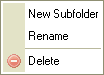

Kansioiden muodostama puurakenne, jossa voidaan liikkua. Kansioiden avulla j盲rjestell盲盲n tiedostoja.
Rakennetta kutsutaan puun盲kym盲ksi, koska kansiot on esitetty hierarkkisesti kuten puun oksat. Yleisilme vastaa modernien graafisten k盲ytt枚j盲rjestelmien tiedostoselainn盲kym盲盲.
Avataksesi kansion, eli n盲ytt盲盲ksesi alikansiot, napsauta kansion edess盲 olevaa plusmerkki盲
( ). Jollei plusmerkki盲 n盲y, kansio ei sis盲ll盲 alikansioita.
). Jollei plusmerkki盲 n盲y, kansio ei sis盲ll盲 alikansioita.
Katso "Kutsusta lataaminen" alempana t盲ll盲 sivulla ymm盲rt盲盲ksesi, kuinka kansioiden lataaminen toimii.
Paina kansion edess盲 n盲kyv盲盲 miinusmerkki盲 sulkeaksesi kansion ().
Valitaksesi kansion, napsauta kansionime盲 tai -kuvaketta. Valitun kansion taustav盲ri muuttuu.
Kansion edityneempiin toimintoihin p盲盲set "pikavalikosta". Tarjolla on seuraavat valinnat:

Huom: Jotkin pikavalikon valinnat voivat olla kytkettyn盲 pois, mik盲li p盲盲k盲ytt盲j盲 on n盲in valinnut.
Luodaksesi alikansion, napsauta "Uusi alikansio" -valintaa pikavalikossa. Valintaruutu ilmestyy kysyen lis盲tt盲v盲n kansion nime盲. Kirjoita ja vahvista nimi.
Kansio- ja tiedostonimiss盲 ei voi k盲ytt盲盲 kaikkia merkkej盲. T盲m盲 on k盲ytt枚j盲rjestelm盲kohtaista. Esim. : \ / : * ? " < > |
Uudelleennimet盲ksesi kansion, napsauta "Uudelleennime盲"-valintaa pikavalikossa. Ilmestyy valintaikkuna, jossa n盲kyy kansion nykyinen nimi. Kirjoita uusi nimi ja vahvista valinta.
Kansio- ja tiedostonimiss盲 ei voi k盲ytt盲盲 kaikkia merkkej盲. T盲m盲 on k盲ytt枚j盲rjestelm盲kohtaista. Esim. : \ / : * ? " < > |
Huom: Kun uudelleennime盲t kansion, linkin tai mediatiedoston, jota k盲ytet盲盲n jollain toisellakin sivulla, toisen sivun linkit rikkoontuvat. Ole siis varovainen toimenpiteen suhteen.
Poistaaksesi kansion sis盲lt枚ineen, napsauta "Poista" pikavalikossa. N盲kyviin ilmestyy ikkuna, jossa kysyt盲盲n varmistusta toimenpiteelle.
Huom: Kun poistat kansion, linkin tai mediatiedoston, jota k盲ytet盲盲n jollain toisellakin sivulla, toisen sivun linkit rikkoontuvat. Ole siis varovainen toimenpiteen suhteen.
CKFinderissa kansioiden sis盲lt枚 ladataan "kutsusta" toisin kuin paikallisia kansioita selattaessa. Ts. aluksi ladataan vain puurakenteen n盲kyv盲t kansiot, ja vasta avattaessa kansiota ladataan alikansiot ja tiedostot n盲kyviin. T盲m盲 on tavallista nettisovellusten suhteen.
Kansioiden latautumisen havaitset ilmoituksesta "Lataan...":

Ilmoitus katoaa automaattisesti kansion lataannuttua. Ensimm盲isen latauskerran j盲lkeen ilmoituksen ei pit盲isi uudelleen ilmesty盲 samalle kansiolle.